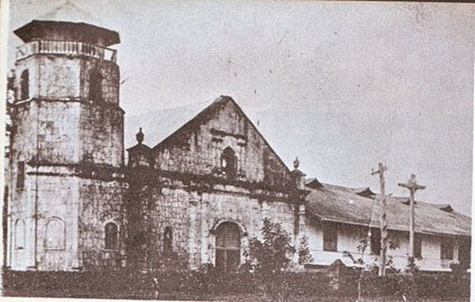

HISTORY
Cagayan de Oro, also known as "The City of Golden Friendship," is a highly urbanized city in the Northern Mindanao region of the Philippines. The city got its name from the Cagayan River, which runs through the heart of the city and empties into Macajalar Bay.
Cagayan de Oro has a rich history dating back to pre-colonial times, with evidence of human habitation in the area as early as the Neolithic Age. The area was later colonized by the Spanish in the 16th century and was eventually turned over to the Americans in the early 20th century.